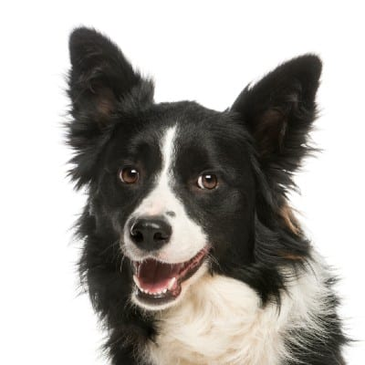
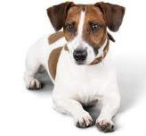
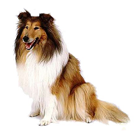
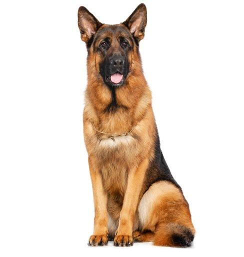
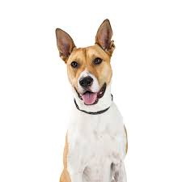

Daniel Moshailov - Dog Trainer
Dog training according to the needs of the dog and therapeutic dog training
.jpg "photo")
Discover our work
Hello, you have come to the website of Daniel - your personal trainer.
Graduate of the 'Dogs for People'(DFP) association and has 13 years of experience working with dogs and therapeutic canine with children, children with special needs, at-risk youth and post-trauma patients.
Emotional therapy with the help of dogs has been found to reduce stress, anxiety, pain and more. In addition brings about a positive health impact (see Articles).
Learn more
Our mission: your vision
"Contact with a dog is durabler and stronger than any contact on earth."
-Conrad Lorenz-
animal behavior researcher, winner of the Austrian Nobel Prize
Examples of breeds trained by us:
|

Border Collie
The Border Collie is one of the breeds of domestic dogs. It is groomed for use as an aid to sheep grazing. |

Jack Russell Terrier
The Jack Russell Terrier is a breed of domestic dog. Small, friendly and easy to train. An energetic dog, loves to play, brave and tough. |

Collie dogs
The coli is originally used for grazing sheep. Best known for the main character from the movie "Lassie". |
 Canaan Dogs
Canaan Dogs
A Canaanite dog, is the only purebred dog found in the Land of Israel. The Canaanite breed belongs to the subfamily Dachshund. |

German Sheperd
The German Shepherd is considered the easiest to train, he is very loyal, very obedient and loves tasks - if you give him such, then you have a happy dog. |

Mixed Dogs
Mixed dogs are full of surprises. Unlike purebred dogs, it is not possible to predict how comfortable or difficult the training will be. |
Learn more
.jpg "last-image")